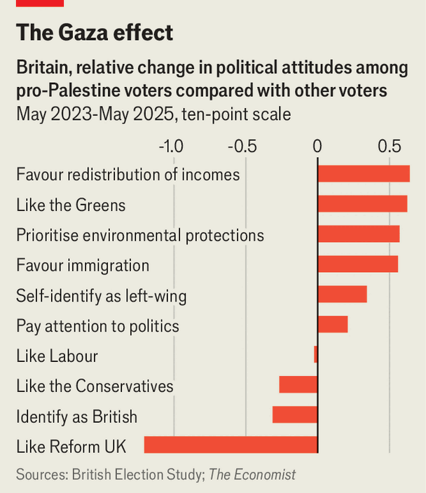

British politics has passed peak Palestine
The war in Gaza has turned a cohort of voters leftwards
June 4th 2026
“First of all, they are very complicit in the genocide in Gaza,” says Ishan, a young Muslim in Manchester, asked about the Labour government. “That’s a big thing.” As the conflict in Gaza has ground on, Britons’ views of Israel have hardened. Fury at the Labour Party for its handling of the issue has fuelled the rise of pro-Gaza independent MPs, in constituencies with many Muslims, and of the Green Party elsewhere. But despite the passions around the matter, relatively few voters name Israel or Palestine as their most important concern. There are signs that the war is beginning to fade from people’s minds. Still, advocacy for Gaza has created a cohort of (often young) left-populist voters.
Britain is not an outlier. In the median of 24 countries surveyed by the Pew Research Centre in March 2025, 62% had an unfavourable opinion of Israel, while 29% had a favourable view. In Britain the figures were 61% and 30%. Likewise YouGov found in May 2025 that 32% of Britons sympathised more with Palestine than Israel, compared with 18% in Germany, 24% in France, 31% in Italy and 33% in Spain.
Even so, there are reasons why the issue is especially fraught in Britain. Although the country supplies less than 1% of Israel’s arms imports, activists have latched onto the idea that the British government has supported Israel’s war. Britain’s history in the region has not helped.
Labour has been repeatedly wrong-footed. In the weeks after October 7th 2023—when Hamas breached Israel’s border fences before killing and kidnapping Israelis—Sir Keir Starmer, then leader of the opposition, clumsily defended Israel’s response. Anxious to avoid accusations of antisemitism, Sir Keir repeatedly refused to call for a ceasefire, prompting a rebellion by his own MPs. In government, the party has shifted towards a pro-Palestine position, suspending some arms exports to Israel and formally recognising the Palestinian state, while taking a hard line against some protesters.
Britain’s Muslims, 6% of the population, are particularly exercised. In May 2024 a poll by Savanta found that 21% of them said the Israel-Palestine conflict was the most important issue when deciding how to vote in the general election that year (compared with 3% in Britain overall, including 9% of 18- to 24-year-olds). As Britain elected Labour by a landslide, pro-Gaza independent MPs managed to seize four formerly safe Labour seats with large Muslim populations.
In May’s local elections Gaza independents failed to win four councils they had targeted (although the Muslim-led Aspire party was re-elected in Tower Hamlets). Instead, many Muslims are turning towards the Greens. A recent poll by Think Labour, a Labour-affiliated think-tank, found the Greens had 30% support among Muslims, compared with 44% for Labour and 10% for independents.

Only a tiny fraction of non-Muslim voters say the war in Gaza is their top issue. The British Election Study (BES) gives respondents an open-ended text box to write about their most important concern. Less than 0.5% of respondents wrote the words “Gaza”, “Palestine”, “Israel”, “genocide” or “war crimes” in their responses in May-June 2024. By May 2025, the figure had fallen by half. In May 2026 Google searches in Britain about the war dropped to their lowest level since 2023.
Although Gaza is the main matter for only a shrinking fringe it continues to shape British politics. A close look at those who responded to the BES in May 2023 and May 2025 reveals the lingering effects of pro-Palestine advocacy on a wide range of topics. Altogether, 19% of respondents said they had “much more” sympathy with Palestine than Israel. By May 2025, that group had become 0.6 points more favourable towards redistributing incomes, on average, on a ten-point scale, relative to other respondents (see chart). Over the two years they also became relatively more supportive of environmental protection, immigration—and the Green Party.
For the Greens’ leader, Zack Polanski, like lefties elsewhere, Gaza has been a recruitment opportunity. Advocacy for Palestine is abundant on social media, where gut-wrenching images are shared far and wide. Once users go down the Gaza hole, Mr Polanski is only a few taps away.■
For more expert analysis of the biggest stories in Britain, sign up to Blighty, our weekly subscriber-only newsletter.